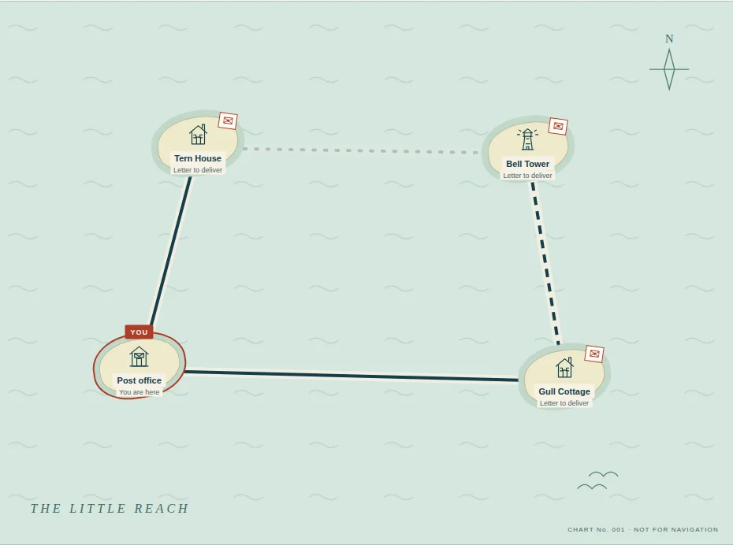
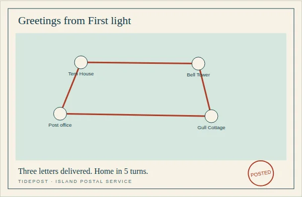

Original maps. Independently checked turn targets.
01 / 05 · THE IDEA
The sea has a schedule.
You have three letters.
A quiet postal puzzle where waiting is part of finding your way.
For anyone who wants a little thinking time, not another thing to keep up with. Your first delivery is one click away.
Deliver your first letter →
02 / 05 · THE DESIGN
A field book.
Not a control panel.
Warm paper, sea-glass water, ink drawings, and a courier-red mark that says YOU.
The map invites exploration. A text route list makes every crossing explicit. The forecast tells you what happens next.
Only a move or a wait turns the tide. Take as long as you like.
PaperSea glassInkCoral
“No clock.
No rush.”
Unlimited undo. Visible focus. Route labels beyond color. A postcard for every homecoming, not just a perfect score.
03 / 05 · THE EXPERIENCE
Three deliveries.
One way home.
- Take the bridge to Tern House.
- Catch the ferry to Bell Tower.
- The causeway is closed. Wait for Falling tide.
- Deliver at Gull Cottage, then head home.
Five turns later, the actual route becomes a postcard you can keep or replay.
Watch the real round →
04 / 05 · UNDER THE SURFACE
Small enough
to understand.
Plain HTML, CSS and JavaScript. A deterministic engine. No runtime libraries or remote services.
An independent shortest-route solver checks all six authored maps. Browser tests play every round through the real controls.
320, 390, 820 and 1440 pixels. Map hit targets and labels checked.
A full round with Tab and Enter. Modal focus and Escape checked.
Downloaded SVG parsed. Replay, reduced motion and blocked storage exercised.
05 / 05 · THE FINISH
A little reach.
A finished journey.
Six rounds, a changing tide, and something to take home.
Intentionally cut: accounts, saved progress, procedural maps, leaderboards, audio requirements and tracking. Reload for a fresh start.
Tested in Chromium with focused accessibility checks, not a claim of universal browser or accessibility certification.